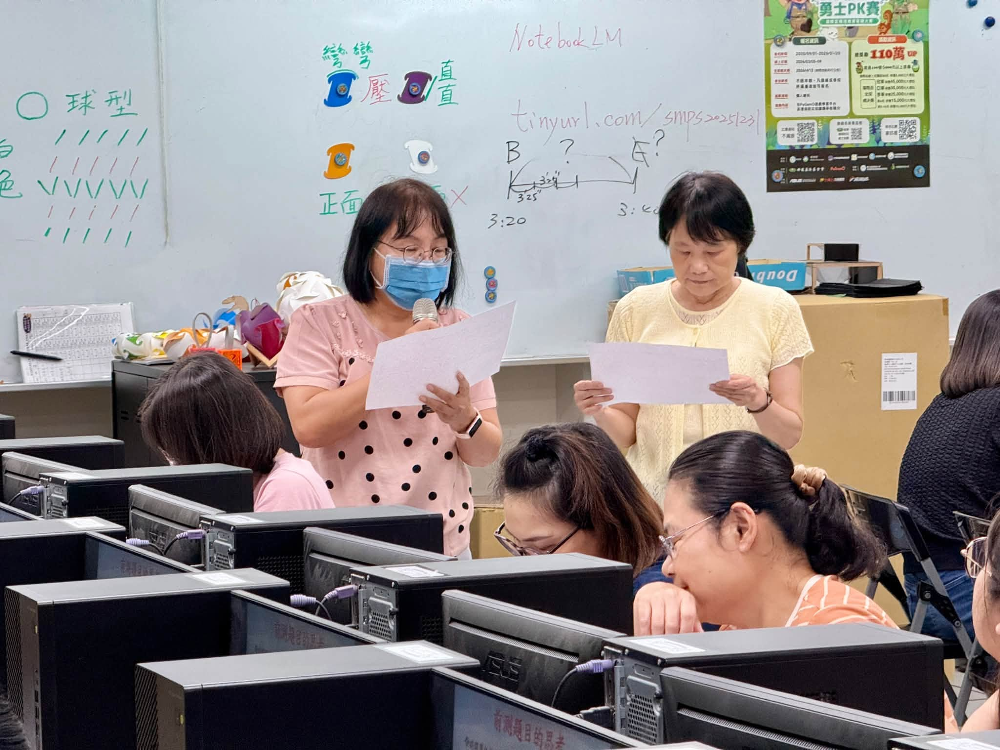
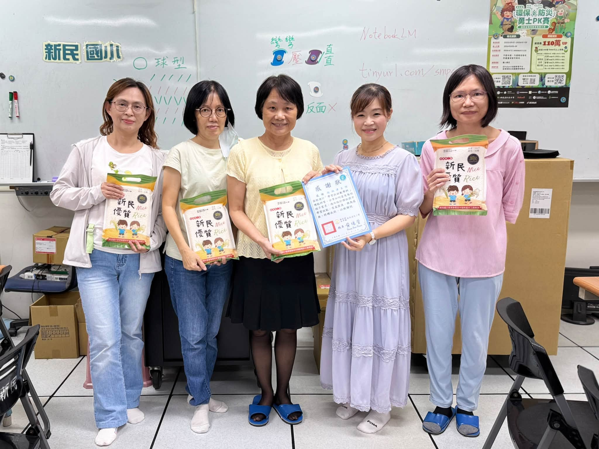

Professional teaching is not only about passing on knowledge. It is also about whether teachers can read the information in an assessment and see what students actually need — and then ask: How could the curriculum be adjusted? How could the teaching change? What other strategies would help children learn better?
Hsinmin Elementary held a workshop on applying learning-support test results, inviting Director Shih Shu-chin of Lukang Elementary to share with us, joined by full-time and part-time advisers from the county's mathematics advisory group, who came on site to help Hsinmin teachers deepen their expertise in learning support.
- 🌱From multi-sensory learning to curriculum adjustment — with varied teaching strategies and appropriate adjustments, every child can find a way of learning that fits, and adaptive teaching becomes real in the classroom.從多感官學習，思考課程與教學調整：面對學生不同的學習需求，教師透過多元的教學策略與適切的課程調整，讓適性教學真正落實在課堂之中。
- 🔍From assessment analysis to more precise teaching — teachers learned to produce a learning-support analysis sheet, then worked in groups to map each question type onto the content, concepts, and abilities behind it.從評量分析，走向更精準的教學：認識如何產出學習扶助分析表，並透過分組討論，分析不同題型背後對應的學習內容、概念與能力。


分組討論與分享，以及致贈講師感謝狀與新民優質好米
Teachers didn't stop at "which abilities does this question require?" They went a step further and paused to discuss: How can that ability be taught? Which strategies could work? How can curriculum and lesson design help a child build real understanding? From analyzing the assessment and identifying needs, to adjusting teaching and applying strategies — this is how assessment truly becomes a basis for improving instruction.
教師持續學習，就是孩子最好的學習支持。
教師多一分專業準備，孩子就多一分學習的支持。
Throughout the session, Hsinmin teachers listened closely, discussed in groups, and traded teaching experiences with one another — because we believe that raising teachers' professional knowledge raises the quality of teaching itself. This is the direction Hsinmin keeps working toward: letting teachers be lifelong learners, so that professional growth flows right back into children's learning.
Thank you to Director Shih Shu-chin of Lukang Elementary for her professional sharing, and to the mathematics advisory group's full-time and part-time advisers for joining us on site. 📚
從評量看見學習需求－新民教師專業增能 📚
教育的專業，不只是傳授知識，更在於教師能否透過評量資訊掌握學生的學習需求，進一步思考：課程可以如何調整？教學可以如何改變？還有哪些策略能幫助孩子學得更好？
新民國小辦理學習扶助測驗結果報告應用研習，邀請鹿港國小施淑津主任蒞校分享，並由數學領域輔導團專任、兼任輔導員協同入校，陪伴新民教師一起精進學習扶助專業知能。
🌱 從多感官學習，思考課程與教學調整 🌱
研習首先從多感官學習與課程調整談起。面對學生不同的學習需求，教師透過多元的教學策略與適切的課程調整，讓每個孩子都能找到適合自己的學習方式，也讓適性教學真正落實在課堂之中。
🔍 從評量分析，走向更精準的教學 🔍
接著，施主任帶領教師認識如何產出學習扶助分析表，並透過分組討論，針對不同題型分析其背後所對應的學習內容、概念與能力。
老師們不只分析「這一題需要哪些能力」，更進一步停下來討論：這項能力可以怎麼教？可以運用哪些策略？如何透過課程與教學設計，幫助孩子建立理解？從評量分析、掌握需求，到教學調整與策略運用，讓評量真正成為教師改進教學的重要依據。
❤️ 教師持續學習，就是孩子最好的學習支持 ❤️
研習現場，新民教師認真聆聽、分組討論，也不斷交換彼此的教學經驗。因為我們相信，提升教師專業知能，就是提升教學品質；教師多一分專業準備，孩子就多一分學習的支持。
這也是新民一直努力的方向——讓教師成為持續學習的人，也讓專業成長真正回到孩子的學習🙂
感謝鹿港國小施淑津主任專業分享，也感謝數學領域輔導團專輔與兼輔老師協同入校。
Tap 🔊 to listen · 點喇叭聽發音
An assessment shows teachers what students still need.評量讓老師看見學生還需要什麼。
Teachers analyze each question to see the skills behind it.老師分析每一題背後需要哪些能力。
A good strategy helps a child understand a hard idea.好的策略幫助孩子理解困難的概念。
Teachers adjust lessons so every child can follow.老師調整課程，讓每個孩子都跟得上。
Test results help teachers diagnose learning gaps.測驗結果幫助老師診斷學習落差。
Professional growth for teachers means better support for students.教師的專業成長，就是學生更好的支持。
Match the word to its meaning
把英文和中文配對
Matched 配對成功：0 / 6